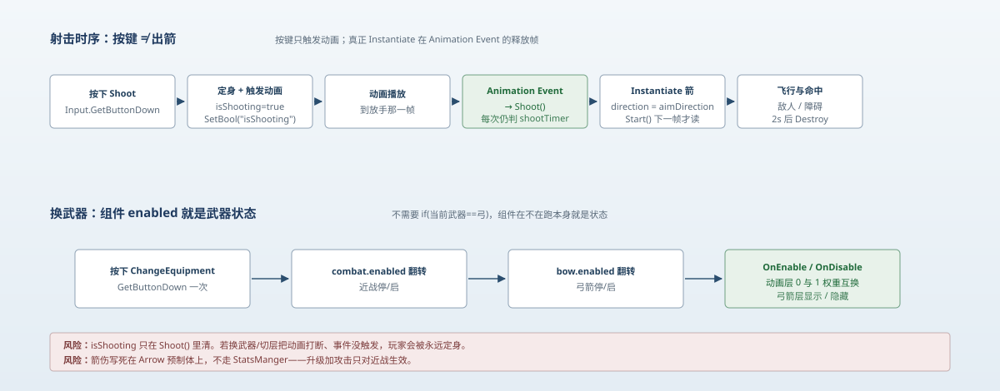

一句话说清这天的内容
前几天都在收口旧代码，今天换方向：把弓箭模块从头捋一遍。它由 5 个脚本咬合而成——Player_Bow 管瞄准与射击、Arrow 管飞行与命中、Player_ChangeEqiupment 管近战⇄弓箭切换、PlayerMovement 管射击时定身、Player_Combat 是近战对照。最重要的是搞清一件事：按下射击键那一刻，箭并没有生成；真正 Instantiate 发生在动画事件的释放帧。
先说结论
弓箭模块能不能跑对，不取决于伤害填多大，而取决于三个时序：
- 方向要在出箭前算好 ——
aimDirection由八向输入归一化，并同步给 Animator 选拉弓姿势； - 出箭要在动画释放帧 —— 按键只
SetBool触发动画，Shoot()由 Animation Event 调； - 换武器靠
enabled驱动动画层 —— 不写if (当前武器 == 弓)，组件在不在跑本身就是状态。
这三条都成立时，手感是"拉弓—放手—箭出"，而不是"按键瞬间凭空冒出一支箭"。
一、模块构成
| 脚本 | 职责 | 关键 API |
|---|---|---|
Player_Bow | 瞄准、触发射击、切动画层 | GetAxisRaw / SetBool / Instantiate |
Arrow | 飞行、命中判定、插墙 | Rigidbody2D / OnCollisionEnter2D / SetParent |
Player_ChangeEqiupment | 近战 ⇄ 弓箭 | enabled 翻转 |
PlayerMovement | 射击时定身 | isShooting → velocity = 0 |
Player_Combat | 近战对照（伤害/击退/范围） | OverlapCircleAll / StatsManger |

二、瞄准：八向向量 + Animator 参数
private Vector2 aimDirection = Vector2.right;
private void HandleAiming()
{
float horizontal = Input.GetAxisRaw("Horizontal");
float vertical = Input.GetAxisRaw("Vertical");
if (horizontal != 0 || vertical != 0)
{
aimDirection = new Vector2(horizontal, vertical).normalized;
anim.SetFloat("aimX", aimDirection.x);
anim.SetFloat("aimY", aimDirection.y);
}
}四个细节，每个都有用意：
GetAxisRaw而不是GetAxis：Raw 没有平滑插值，八向输入立刻生效。瞄准要的是"指哪打哪"，不能有过渡。- 只在有输入时更新：松手后
aimDirection保留上一次的值——这是"记住最后瞄准方向"的常见做法，否则一松手箭就会默认往右飞。 .normalized不能省：斜向输入是(1,1)，长度 √2。方向向量不归一化，direction * speed会让斜射比平射快 41%。- 同时写
aimX/aimY给 Animator：Blend Tree 用这两个参数选上 / 下 / 侧向的拉弓姿势。方向和动画必须来自同一个源，否则会出现"箭往上飞、人朝右拉弓"。
提示
这是手柄/双摇杆式的方向瞄准，不是鼠标瞄准——全程没有 ScreenToWorldPoint。想改成鼠标，HandleAiming 要换成 Camera.main.ScreenToWorldPoint(Input.mousePosition) 再减自身位置，其余逻辑（归一化、写 anim 参数）可以原样保留。
三、射击：按键和出箭是两件事
第一段：按键只触发动画
void Update()
{
shootTimer -= Time.deltaTime;
HandleAiming();
if (Input.GetButtonDown("Shoot") && shootTimer <= 0)
{
playerMovement.isShooting = true; // 定身
anim.SetBool("isShooting", true); // 触发动画
}
}第二段：动画事件才真正出箭
public void Shoot() // 由 Animation Event 调用，Update 里没人调它
{
if (shootTimer <= 0)
{
Arrow arrow = Instantiate(arrowPrefab, launchPoint.position, Quaternion.identity)
.GetComponent<Arrow>();
arrow.direction = aimDirection;
shootTimer = shootColldown;
}
anim.SetBool("isShooting", false); // 复位动画
playerMovement.isShooting = false; // 解除定身
}为什么 Shoot() 是 public 却没人直接调？因为它是 Animation Event：在射击动画"放手"那一帧挂上这个方法。这样出箭时刻跟动画严格同步——早一帧箭在弦上就飞出去了，晚一帧则看着像空放。
三个值得记住的点：
shootTimer判了两次。Update判一次，防连点重复触发动画；Shoot()再判一次，防动画事件因状态机切换被重复派发时连发。冷却只在真正出箭时才写，所以"点了但没出箭"不会白吃冷却。direction在Instantiate之后赋值还能生效，是因为Arrow.Start()要到下一帧才跑。如果把初始化写进Awake()，Awake在Instantiate当下就执行，那时direction还是默认的Vector2.right，箭会永远向右飞。这就是 Day 10/11 反复出现的那句话：生命周期顺序决定行为。Shoot()末尾同时复位动画 bool 和isShooting。玩家从"按键"到"出箭"这段时间是被锁住的，锁的解除点就在这一帧——所以它一旦不执行，玩家就永远锁着（后面第六节会讲这个洞）。
四、定身：isShooting 的实现与代价
void FixedUpdate()
{
if (isShooting == true)
{
rb.velocity = Vector2.zero; // 射击中钉住
}
else if (isKnockack == false)
{
// 正常移动
}
}用 FixedUpdate 而不是 Update 是对的——速度是物理量，必须跟物理步长同步，否则会出现"设了零又被物理步覆盖"的抖动。
代价是：isShooting 是一个只在一个地方被清掉的隐藏状态。它由 Player_Bow.Update 置 true、由 Player_Bow.Shoot() 置 false。中间这段窗口期，任何让 Shoot() 不执行的情况都会把玩家永久钉死：
- 出箭动画被换武器打断；
- Animator 层权重切换导致状态机离开射击节点；
- 动画事件配置漏了/改名了。
这类"状态置位点与清除点不对称"的写法，是 Day 10 复盘里"UI 与数据不同步"的同一类问题的变种。
五、箭的两种命中
private void OnCollisionEnter2D(Collision2D collision)
{
if ((enemyLayer.value & (1 << collision.gameObject.layer)) > 0)
{
collision.gameObject.GetComponent<Enemy_Health>().ChangeHealth(-damage);
collision.gameObject.GetComponent<Enemy_Knockback>().Knockback(
transform, knockbackForce, knockbackTime, stunTime);
}
else if ((obstacleLayer.value & (1 << collision.gameObject.layer)) > 0)
{
AttachToTarget(collision.gameObject.transform);
}
}
private void AttachToTarget(Transform target)
{
sr.sprite = buriedSprite;
rb.velocity = Vector2.zero;
rb.isKinematic = true;
transform.SetParent(target);
}打敌人：扣血 + 击退。注意它没有归零速度、也没有销毁自己——所以一支箭可以连续命中多个敌人，是事实上的"穿透箭"。这是设计还是巧合，得自己定（下一节展开）。
打障碍：换成"插进去"的贴图、速度归零、改成 isKinematic、并且 SetParent(target)。最后这步让箭跟着障碍物走——插在移动平台上时箭会跟着平台移动，这个是加分项。
其它层：两个分支都不进，箭直接穿过去。包括玩家自己所在的层——如果发射点离身体太近，箭有可能在出生瞬间和玩家碰撞体接触（取决于 Layer 配置），值得实际测一下。
另外，OnCollisionEnter2D 用的是碰撞不是触发：箭头预制体上的 Collider2D 必须是非 Trigger，且至少一方带 Rigidbody2D（箭有），否则整个回调都不会触发。
六、换武器：enabled 就是武器状态
public class Player_ChangeEqiupment : MonoBehaviour
{
public Player_Combat combat;
public Player_Bow bow;
void Update()
{
if (Input.GetButtonDown("ChangeEquipment"))
{
combat.enabled = !combat.enabled;
bow.enabled = !bow.enabled;
}
}
}// Player_Bow
private void OnEnable()
{
anim.SetLayerWeight(0, 0); // 基础层压掉
anim.SetLayerWeight(1, 1); // 弓箭层拉起
}
private void OnDisable()
{
anim.SetLayerWeight(0, 1); // 恢复基础层
anim.SetLayerWeight(1, 0);
}这段是本模块最漂亮的设计，原因有三：
- 不用维护"当前武器"枚举。组件的
enabled就是状态本身，省掉一个字段、一个 switch、以及"枚举和实际行为不同步"的整类 bug。 Update天然被关掉。bow.enabled = false之后，Player_Bow.Update不再跑，射击输入自然失效——拦截点在组件生命周期上，不在 if 判断里。OnEnable/OnDisable是免费的切换钩子。动画层权重的切换恰好就该在启用/停用的瞬间做，不需要额外的"切换武器"方法。
技巧
对比近战：PlayerMovement.Update 里是靠 && player_Combat.enabled == true 在调用处拦。弓箭是靠组件自身不跑在源头拦。两种写法都能用，但后者更稳——调用方永远不用记得检查。
七、和近战的对照：伤害没统一
| 维度 | 近战 Player_Combat | 弓箭 Arrow |
|---|---|---|
| 伤害来源 | StatsManger.Instance.damage | 预制体上的 public int damage |
| 击退参数 | StatsManger.knockbackForce/Time | Arrow.knockbackForce/Time |
| 命中判定 | OverlapCircleAll(weaponRange) | 物理碰撞 + LayerMask |
| 冷却 | cooldown = 2f | shootColldown = 0.5f |
| 范围 | StatsManger.weaponRange | 无（飞到哪算哪） |
问题很清楚：近战读全局属性，弓箭读预制体常量。所以"升级加攻击力"这条线只对近战生效，弓箭伤害永远是预制体上填的那个数。要让属性系统真正统一，弓箭得改成从 StatsManger 取伤害（或者给属性单例加一个 rangedDamage 字段）。
八、今天翻出来的账
| # | 隐患 | 后果 | 一句话修法 |
|---|---|---|---|
| 1 | isShooting 只在 Shoot() 里清 | 动画被打断 → 玩家永久定身 | OnDisable 里清一次 + 出箭超时兜底 |
| 2 | Arrow.damage 不走 StatsManger | 升级只加近战，弓箭不变强 | 命中时改读 StatsManger |
| 3 | GetComponent<Enemy_Health>() 不判空 | 敌人层有物体缺组件 → NRE | 取到再判，或 TryGetComponent |
| 4 | 箭命中敌人不减速不销毁 | 一支箭连穿多个敌人 | 明确语义：要穿透就写清楚，要单发就归零/销毁 |
| 5 | 插墙箭 Destroy(2s) 仍在跑 | "插着的箭"两秒后凭空消失 | 插住后 CancelInvoke，或交给独立清理逻辑 |
第 3 条和 Day 11 修的那个 combat 漏拖是同一类——引用在解引用前必须确认存在。第 5 条则暴露了一个设计问题：箭的"生命周期归属"没定义清楚——它到底属于"飞行物"（2 秒必消失），还是属于"场景装饰"（插住就一直留着）？两种语义混在同一个 Destroy(gameObject, lifeSpawn) 里了。
九、明天要补的洞
- 给
isShooting加兜底（OnDisable清零 + 出箭最长等待时间）。 - 箭伤接到
StatsManger，让远近战共用一套属性。 Arrow命中处改用TryGetComponent，顺手删掉两个未使用的using。- 定下穿透语义，然后按语义改碰撞分支。
- 插墙箭的生命周期与飞行箭分开处理。
一句话总结
Day 12 把弓箭模块拆成了三件事：瞄准是八向输入归一化后同步给 Animator；射击是"按键触发动画、动画事件才 Instantiate"的两段式；换武器是把 enabled 当状态、用 OnEnable/OnDisable 切动画层——模块跑起来靠的不是代码量，而是这三处时序对得上；同时也翻出 5 个隐患，最要命的是 isShooting 置位与清除不对称，一旦动画被打断玩家就会永久定身。